With a set of goals laid out, I started thinking about features for my game, with three priorities in mind:
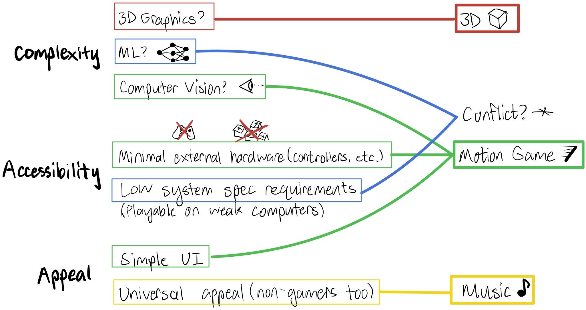The idea of a 3D music-based motion game reminded me of Beat Saber, a widely popular virtual reality game. Unfortunately, Beat Saber requires a VR headset, which means most people can't play it conveniently. Thus, I was inspired to create a PC-based game inspired by Beat Saber with an emphasis on accessibility to the average person.
Motion tracking would be the biggest design challenge for my project.
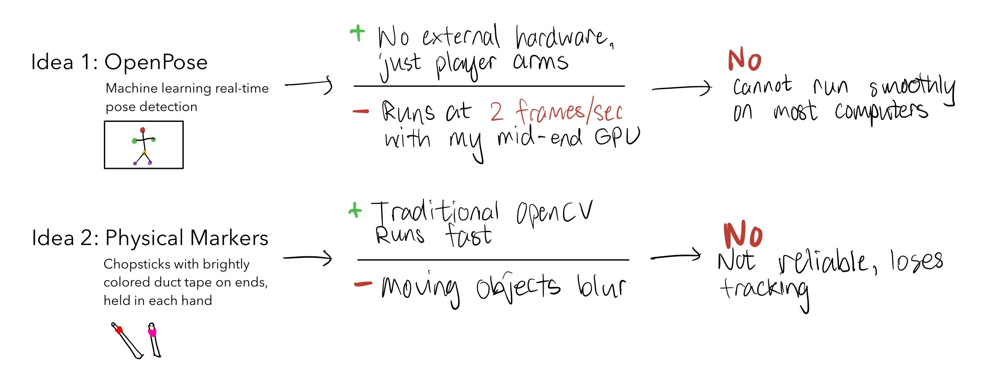My first two ideas proved unreliable or unstable, and would not produce a working game. They also heavily compromised accessibility.
After thinking for a bit about how cameras work, I realized that reflective objects blur into the background when moving, but emissive light sources create bright streaks that are very visible.

With a little openCV code, I was able to get the computer to track the light stick! However, I was pretty unhappy with this setup as it meants players would have to buy parts and build a light stick to play. Not cool. While pondering my options, I realized that any light source worked with the tracking algorithm, and was having some fun:

Wait. Almost everyone has a phone! I had accidentally designed a tracking system that had low system requirements, was robust in varying environments, and used just one convenient item that everyone carries around.
At the same time, I remembered that VR systems track player motions via infrared lights mounted on the controllers. My idea of using visible light, in comparison, traded some of the performance and reliability offered by custom controllers for the greater accessibility of less hardware.
I've always believed that if something is designed well enough, it shouldn't need instructions to be understood. I was very happy with how simple and intuitive the system was, and was excited to take the project further.
The choice to track a flashlight offered several benefits to the project. Traditional OpenCV algorithms are often confused by noisy and cluttered backgrounds, but since such distractions usually aren't too bright, my algorithm simply ignores them. Since webcams tend to have narrow dynamic ranges, the rest of the image becomes naturally darker as the camera adjusts for exposure.
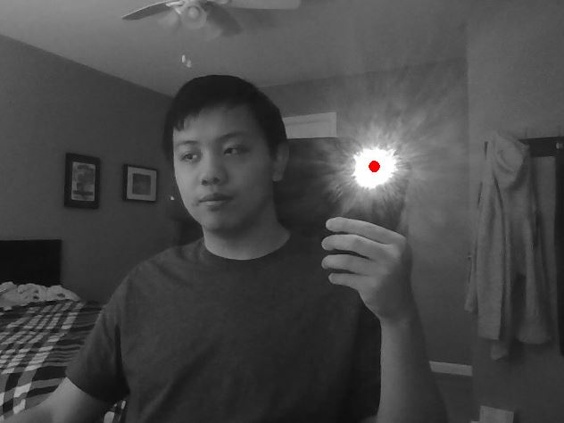When processing inputs, I (1) turned the image grayscale, (2) maximized image contrast and sharpness, and (3) picked out the largest light spot among those available, in the event that there were multiple. The result was a robust algorithm that would track accurately in virtually any typical indoor setting.
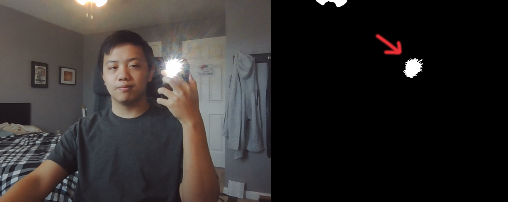Unfortunately, the cycle of reading frames, applying filters, and extracting coordinates greatly slowed the game's framerate as it ran alongside the other processes. My solution was to multithread the application and run the camera input, filtering, coordinate extrapolation, blade construction, and cube slice check on a separate thread, allowing the graphics and movements to both run smoothly
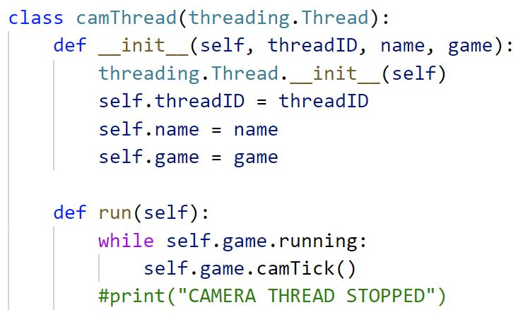Writing a 3D graphics engine meant translating xyz coordinates to 2D screen space coordinates. Since farther away objects appear visually smaller, I knew that x and y would scale based on z. After a bit of trigonometry, I got decent results.
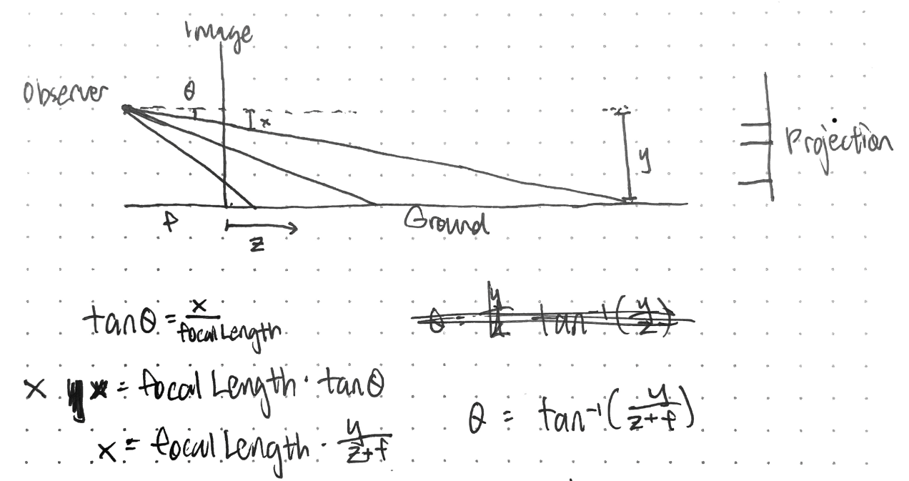
Next was the biggest challenge of the whole project - 3D Slicing. Mathematically, I needed to split a cube into two fragments with a bisecting plane.
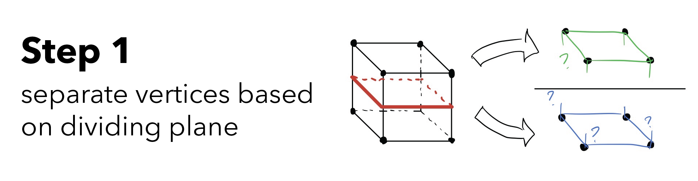 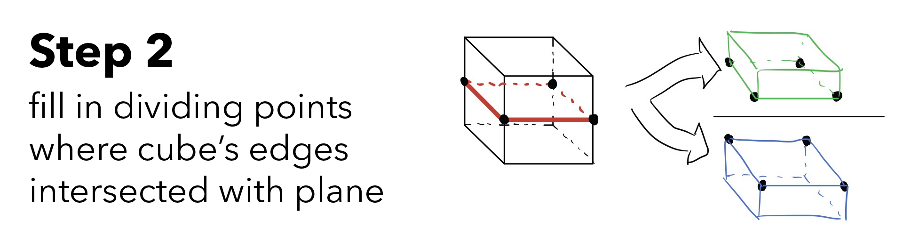 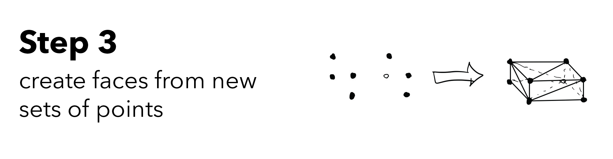Writing an algorithm to create convex polyhedra from 3D coordinates was a bit beyond my time budget, so I borrowed help from scipy's ConvexHull package to create faces from the sets of points. This still left me with a major problem:
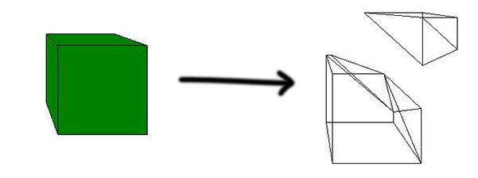It produced a mesh of triangles, which makes sense mathematically, but causes ugly extra lines when drawn out for my purposes. To remedy this, I created an algorithm to merge coplanar faces, and wrote a suite of functions to accomplish it.
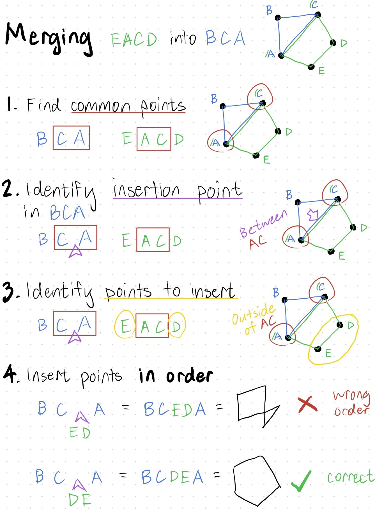Finally, the cubes and their fragments were being drawn correctly. I began experimenting with how the cubes should look:
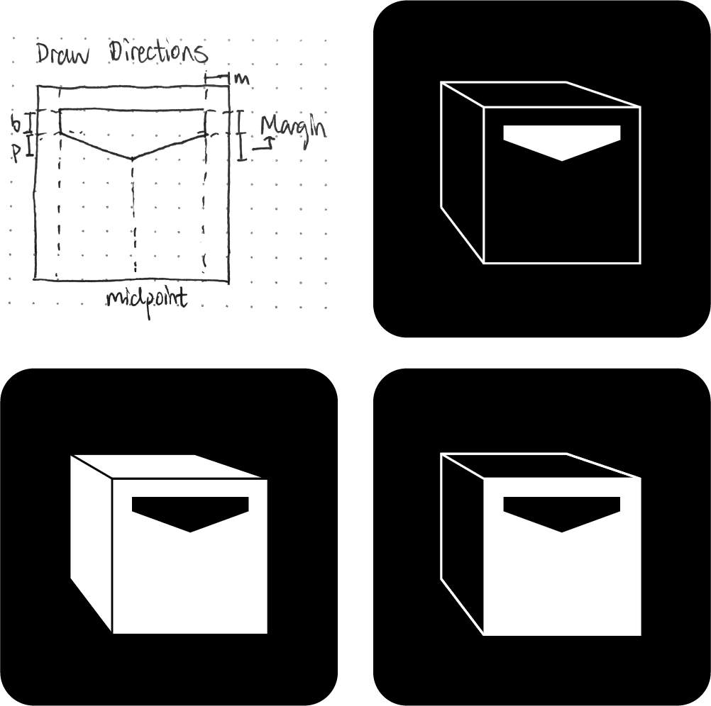They were all a bit too complex, and I wanted something simple. I decided to try the simplest possible representation of a cube, with just a square on top of a hexagon:
And it looked great!
I knew from the start that accurate timing is critical to ensuring the smoothness and feel of rhythm games. A resulting design feature is that cubes were positioned x-y-time coordinates, rather than x-y-z, as arriving exactly on the right beat was more important than being at a specific distance.
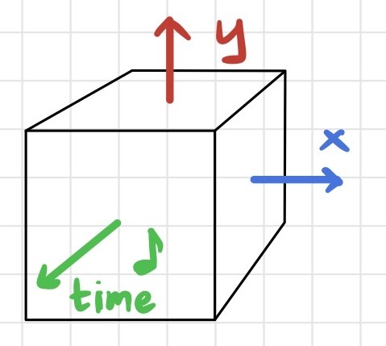There was another major problem: The game's timing cycle did not run consistently. The timer would wait until the game finished the current step before starting to count to the next step, and the duration of each step varied based on computer hardware, screen size, and many other uncontrollable factors. With the goal of running 44,100 steps per second, this level of error was unacceptable and would distort the music to the point that it was unrecognizable.
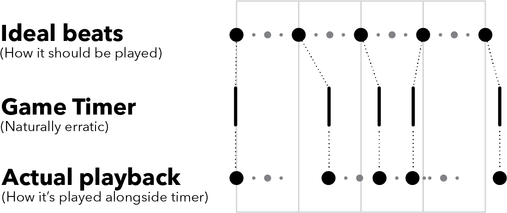My first idea was to measure the error and compensate for it - time each step, and figure out how many beats should occur during it.
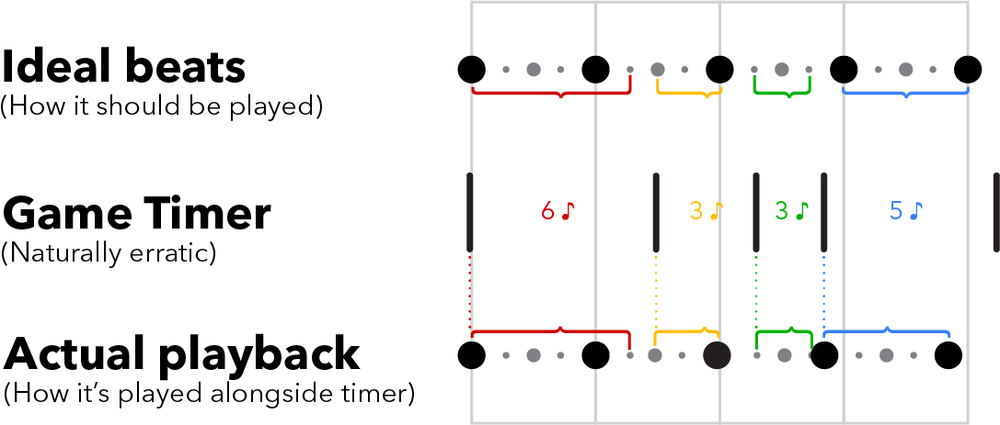Better, but it still did not line up well. My eventual solution was to flip the script - let the view control the model, in MVC terms. The song would play uninterrupted on its own thread, send timing information to the game, and do nothing else, allowing it to run smoothly and stably. The game itself would handle all the processing of converting coordinates and moving cubes. This way, even if the framerate dropped or the program slowed, every cube would still arrive right on time.